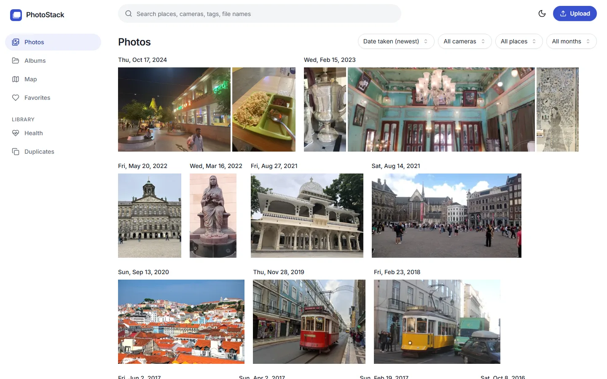
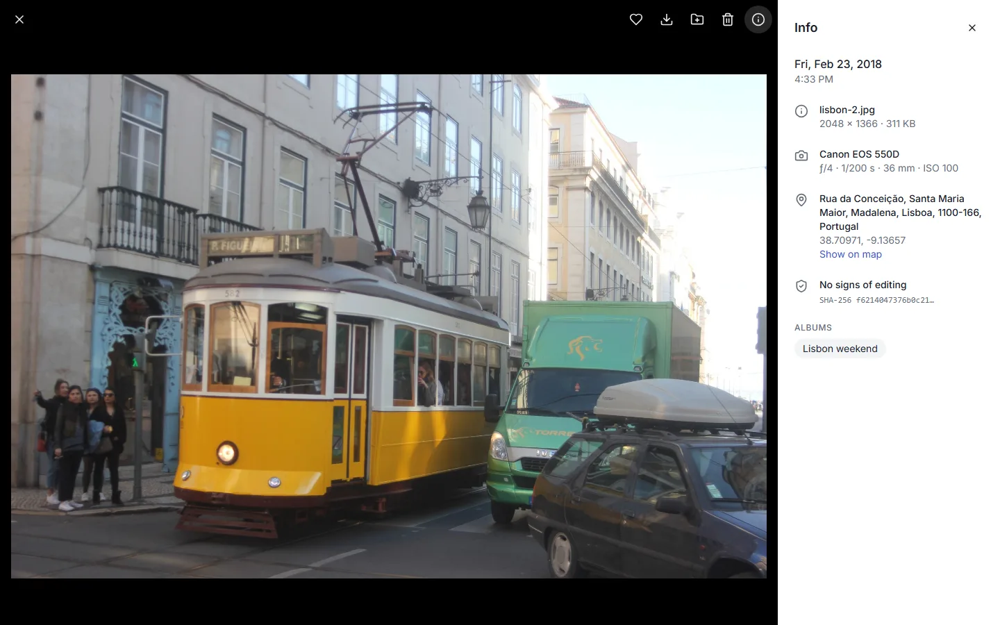
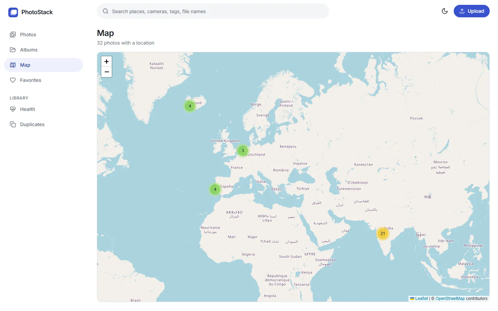
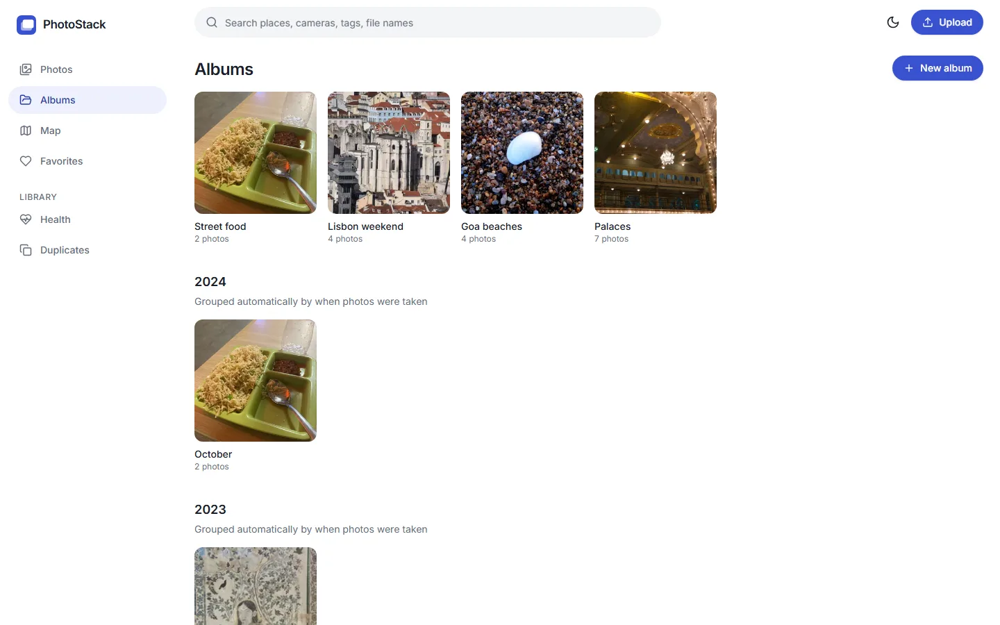
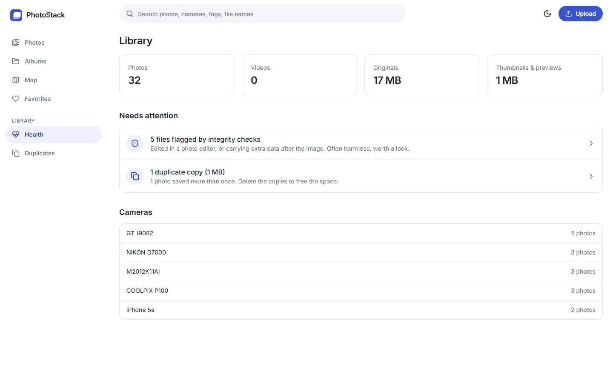

Every detail, read for you
Date, camera, lens, aperture, shutter and ISO straight from the file, the street address from the GPS position, and the albums it belongs to. iPhone HEIC photos and phone videos included.
PhotoStack is a small, self-hosted photo library. Drop in your photos and it reads when and where they were taken, builds a timeline, puts them on a map and finds duplicates.
The demo is read-only and uses freely licensed photos from Wikimedia Commons. It may take a few seconds to wake up.

No accounts to sync, no cloud, no AI required. Point it at your photos and it does the rest.
Date, camera, lens, aperture, shutter and ISO straight from the file, the street address from the GPS position, and the albums it belongs to. iPhone HEIC photos and phone videos included.

Every photo with a location becomes a pin. Zoom in on a city and see what you shot there.

A month-by-month album for everything you've shot, plus your own albums for trips and occasions.

Files that couldn't be read, photos without a date or a location, duplicates wasting space, and files that were edited or carry hidden data. Each with a link to the photos behind it.

By place, camera, tag or file name. Every word has to match.
Finds copies even when resized or re-saved, and keeps the original.
Real file type, SHA-256, editing software, data hidden after the image.
MP4, MOV and WebM with thumbnails, duration, date and place.
Works on desktop and phones, with a dark mode that remembers you.
Off by default. Add a Gemini key to get descriptive tags, nothing else changes.
One Python process, one folder of photos, one database file. Small enough to read in an afternoon.
FastAPI, SQLite and React. Read the architecture notes for the data model and the reasoning behind each design decision.
32 photos from eight cities, with dates, cameras and locations. Click around; you can't break it.
Open the live demo →